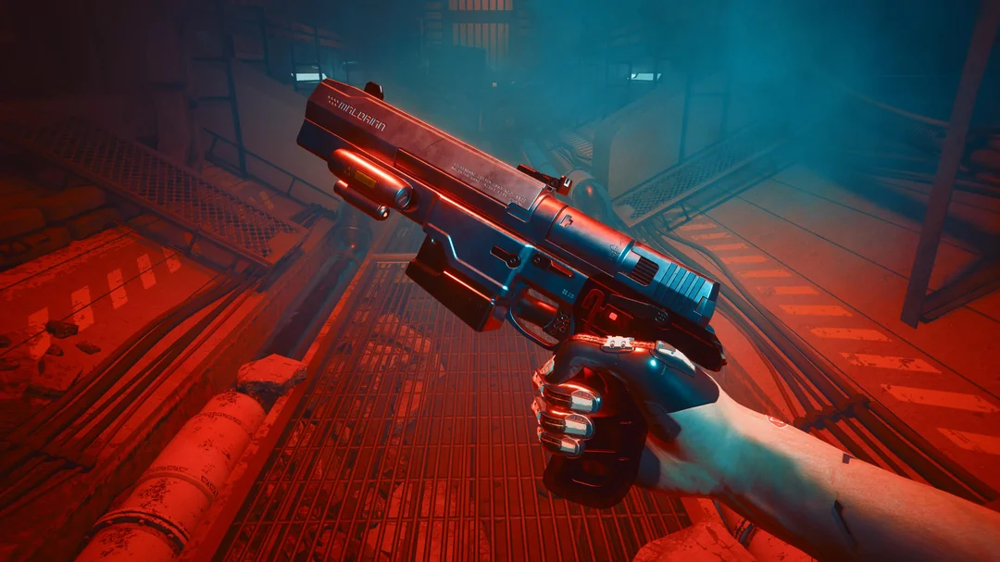

// ARQUIVO 002
COMO SOBREVIVER EM NIGHT CITY?

Cyberpunk 2077 oferece diferentes maneiras de enfrentar seus desafios. O jogador pode combinar armas, habilidades, implantes cibernéticos e estratégias para desenvolver seu próprio estilo de jogo. Existe uma diversidade de tipo de armas no jogo com suas árvores de habilidades individuais, permitindo que o jogador personalize seu personagem de acordo com suas preferências. Além disso, o jogo oferece uma variedade de missões e atividades secundárias, proporcionando uma experiência rica e envolvente para todo tipo de jogador, seja ele mais voltado para a ação, furtividade ou até mesmo exploração.
Além disso, é um jogo "amigável" para todo o tipo de jogador, desde aqueles que preferem jogabiliade mais difícil e desafiadora,
até aqueles que preferem uma experiência mais casual e relaxante. O jogo oferece diferentes níveis de dificuldade, permitindo que cada
jogador escolha a experiência que melhor se adequa ao seu estilo de jogo.
CYBERWARE
Um dos maiores apelos do universo de cyberpunk com certeza são os implantes cibernéticos. No ano de 2077, modificações corporais são extremamente comuns inclusive entre os civis. Dentro do jogo, é possível modificar o corpo de V adicionando melhorias para o sistema nervoso, braços, pernas, esqueleto e sistema operacional. Essas melhorias trazem benefícios para seu personagem, como um bom e velho RPG, mas também podem fornecer novas habilidades, como pulo duplo, a capacidade de hackear inimigos, aumentar a resistência a danos e muito mais. A escolha de quais implantes cibernéticos utilizar é uma parte importante da personalização do personagem e pode influenciar significativamente o estilo de jogo do jogador.
ESTILOS DE COMBATE
É possível utilizar armas de fogo, lâminas, furtividade, hacking e combate corpo a corpo. Cada abordagem oferece possibilidades diferentes durante as missões. Grande parte das missões do jogo podem ser concluídas de mais de uma maneira: você pode chegar mandando tudo pelos ares ou simplesmente concluir um roubo sem acionar um único alarme.